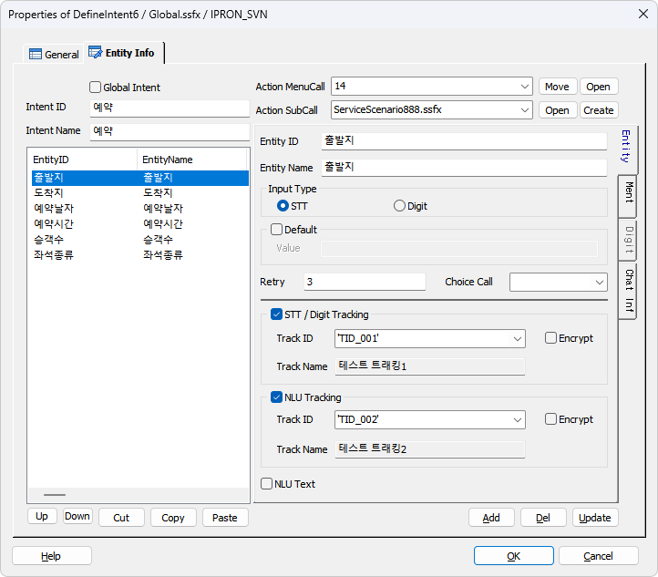
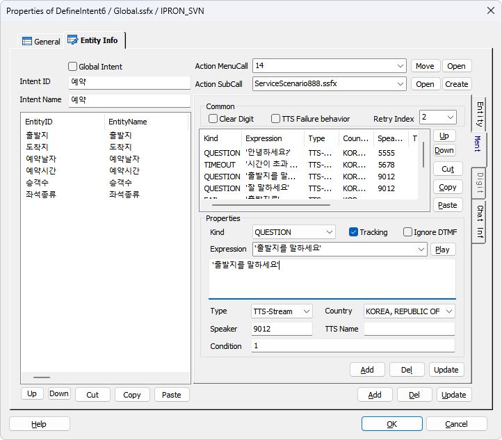
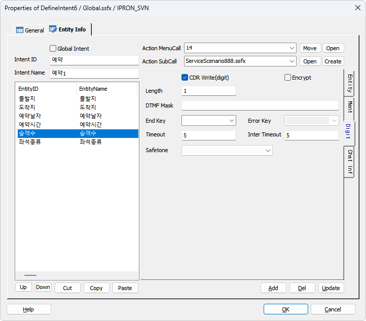
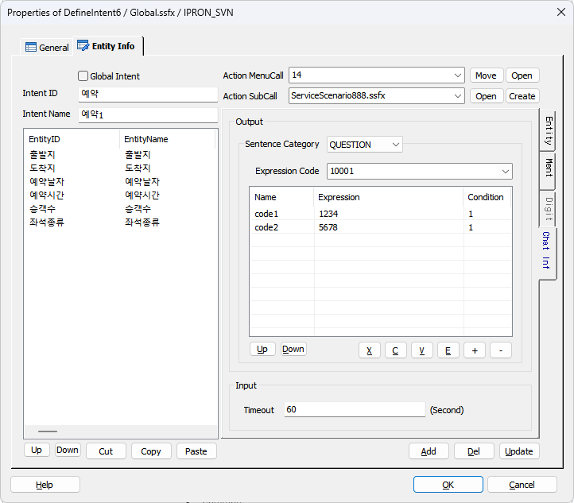

AI 시나리오 개발 시 Intent 및 Entity 를 정의한다.(NLU 에서 리턴하는 Intent 및 Entity)
Intent 에 해당 하는 Entity 값을 받기 위해 STT 및 Digit 속성을 설정하고 플로우 처리에 사용될 멘트도 설정한다.
Intent 의 속성 정보 중 Action SubCall 에 지정된 시나리오 파일은 IntentCall 아이템 에서 분기 될 때 SubCall 로 호출 된다.
EntityCall 아이템 에서는 지정된 Intent에 속한 Entity 를 받기 위한 플로우 태그를 설정된 속성 정보로 생성한다.
ICON
PROPERTIES
 Entity Info
Entity Info

Global Intent CheckBox : Global Intent로 지정합니다.
- IntentCall 아이템에 Intent 를 지정하지 않아도 먼저 Global Intent 로 지정된 Intent 를 NLU 분석 결과와 비교하여 매칭되면 해당 Intent 처리 시나리오 또는 메뉴를 호출한다.
※ 단, 해당 아이템( IntentCall, NLURequest )에서 Global Intent On/Off 가능
※ Global Intent 로 지정된 Intent 를 비교 및 분기하는 시나리오가 빌드 시에 생성됩니다.( GlobalIntent_1F6DE86B_7D3..(Project GUID).fxml )
Intent ID : Intent ID 를 정의 합니다.( ※ NLU 결과로 리턴되는 Intent 아님 )
- IntentCall, EntityCall 아이템에서 DefineIntent 로 정의된 Intent 를 선택 할 때 사용됩니다.
Intent Name : NLU 에서 리턴되는 Intent 를 입력합니다.
- IntentCall 아이템 : Action SubCall(Action MenuCall) 에 지정된 시나리오 또는 메뉴로 분기 할 때 NLU 에서 분석된 Intent 와 비교 할 때 사용됩니다.
- EntityCall 아이템 : 설정된 Entity 리스트를 순서대로 채우기 위한 Entity 입력 시나리오 호출 시 인자로 사용됩니다.
- Intent 가 부모 변수가 되고 정의된 Entity 가 자식 변수가 되는 글로벌 구조체 변수가 정의되어 NLU 에서 분석된 Intent 및 Entity 들의 값이 할당 됩니다.
ex) "원하는 서비스를 말씀해 주세요" 라는 멘트 후 "김포에서 제주도가는 2명 예약 하고 싶어요" 라고 말했을 때
Intent 는 "예약" 이고 Entity 는 "출발지", "도착지", "승객수" 가 분석되었다면 변수에 아래처럼 할당 될 수 있습니다.
_예약._출발지.keyword = "김포"
_예약._출발지.value = "김포공항"
_예약._도착지.keyword = "제주"
_예약._출발지.value = "제주공항"
_예약._승객수.keyword = 2
_예약._승객수.value = 2
※ 변수 앞에 붙은 "_"(언더바)는 Intent Name, Entity 가 한글 또는 숫자일 수 있기 때문에 ForCus 시스템 내에서 변수로 사용하기 위해서 자동으로 붙여집니다.
※ 나머지 입력 안된 Entity 들은 EntityCall 아이템에서 생성하는 Entity 입력 시나리오에서 입력됩니다.
Action MenuCall : Intent 및 Intent 에 필요한 Entity 를 받는 Flow 를 처리하기 위한 메뉴(ID)를 지정합니다.
- Menu Flow 또는 .msfx 시나리오에서 IntentCall 아이템의 매칭된 Intent 에 해당하는 Menu ID를 MenuCall 아이템을 통해서 호출합니다.
※ Menu ID 에 해당하는 메뉴에는 시나리오(.msfx)가 지정되어 있어야 합니다.
- 시나리오에는 Intent 또는 Entity 를 받을 수 있는 NLURequest 또는 EntityCall 아이템이 있어야 합니다.
Action SubCall : Intent 에 필요한 Entity 를 받는 Flow 를 처리하기 위한 시나리오(.ssfx)를 지정합니다.
- 시나리오 파일은 .ssfx 만 사용가능 하고 main.ssfx, global.ssfx 파일은 제외됩니다.
- .ssfx 시나리오에서 IntentCall 아이템의 매칭된 Intent 에 해당하는 시나리오를 SubCall 아이템을 통해서 호출합니다.
- SubCall 아이템으로 시나리오 호출 시 Intent 를 파라미터로 넘기며 호출된 시나리오에서도 입력 파라미터가 생성되어 시나리오 처리에 사용됩니다.
※ 해당 시나리오 Start 아이템 In 파라미터로 "P_IN_INTENT" 가 생성됩니다.
※ 시나리오에 이미 파라미터가 지정된 경우라도 지정된 모든 파라미터는 무시되고 Intent 파라미터만 생성됩니다.
- 시나리오에는 EntityCall 과 같이 Entity 값을 입력 받는 아이템이 있어야 합니다.
Move(Menu) Button : 지정한 Menu ID 에 해당하는 DefineMenu 아이템으로 이동합니다.
Open(Menu) Button : 지정한 Menu ID 에 해당하는 시나리오(.msfx)를 오픈합나다.
Open Button : 지정한 시나리오(.ssfx)를 오픈합니다.
Create Button : 시나리오 파일을(.ssfx) 새로 생성하고 지정합니다.
 Entity Info > Entity
Entity Info > Entity
Entity ID : NLU 요청 시 리턴 되는 Entity ID 를 지정한다.
Entity Name : Entity 항목에 대한 이름이다.
Input Type : Entity 값을 입력 받을 때 STT & NLU 인지 Digit 입력인지 설정한다.(Digit 를 선택하면 Digit 탭이 Enable 된다)
Default CheckBox : Entity 기본 값을 사용한다. 기본 값 설정이 되어 있으면 값을 입력 받지 않고 설정된 기본 값을 자동으로 변수에 할당한다.
Value : Entity 기본 값을 설정한다. 기본 값은 상수 만 설정할 수 있으며 설정된 값이 없으면 없는 값(Null String) 그대로 변수에 채운다.
Retry : 입력 재 시도 카운트를 지정한다.
Choice Call : Multi Call 에서 콜을 선택 합니다.
STT / Digit Tracking CheckBox : STT / Digit 트래킹 생성 체크 박스, STT 결과(@name.vrresult) 또는 Digit 입력 변수(@name.digits)를 Track Value로 남긴다.
Track ID : DefineTrack 에 정의된 Tracking ID를 지정한다.
Track Name : DefineTrack 에 정의된 Tracking ID에 해당하는 Tracking Name을 표시 한다.
Encrypt : Entity 기본 값을 설정한다. 기본 값은 상수 만 설정 할 수 있으며 설정된 값이 없으면 없는 값(Null String) 그대로 변수에 채운다.
NLU Tracking CheckBox : NLU 트래킹 생성 체크 박스, NLU 결과에서 인식된 Intent(@name.intent)를 Track Value로 남긴다.
Track ID : DefineTrack 에 정의된 Tracking ID를 지정한다.
Track Name : DefineTrack 에 정의된 Tracking ID에 해당하는 Tracking Name을 표시 한다.
Encrypt : Entity 기본 값을 설정한다. 기본 값은 상수 만 설정 할 수 있으며 설정된 값이 없으면 없는 값(Null String) 그대로 변수에 채운다.
NLU Text CheckBox : STT 입력 없이 문자열을 설정하여 NLU 분석만 요청 할 때 사용 한다.
※ 음성인식 서버가 없는 경우에 활용 가능
 Entity Info > Ment
Entity Info > Ment

Common
Clear Digit Check Box : 재생 전에 디지트 버퍼를 삭제 할지를 설정 합니다.(재생 전에 발생된 디지트를 버퍼에서 삭제 하지 않으면 재생 하려고 하는 멘트가 바로 중단 됩니다)
TTS Failure Behavior Check Box : 멘트 리스트에서 첫 번째 항목 멘트 타입이 "TTS Stream" 또는 "TTS File" 일 경우 체크 되었을 때 유효하며, 첫 번째 멘트인 TTS Play에서 TTS 서버와 연동이 실패인 경우 첫 번째 멘트 이후 설정된 멘트는(TTS Stream, TTS File 포함 모든 타입) 첫 번째 멘트인 TTS Play의 대체 멘트로 처리 됩니다.(더 자세한 내용은 Play 또는 GetDigit 아이템의 속성을 참고 바랍니다.)
Retry Index : 선택 멘트가 재생중 또는 재생된 후 입력(STT, NLU, Digit)이 실패인 경우 입력 재 시도 시에 멘트를 재생 할 때 멘트 리스트에 지정된 멘트의 순서 번호를 지정하여 해당 멘트를 재생할 수 있습니다.(단, 멘트 리스트에서 위헤서 부터 Kind 가 QUESTION 인 멘트의 순서이며, 1 Base 이다)
가변 멘트(Expression 에 멘트를 연속으로 사용하는 경우, ex: 'm.0', 'm.1' )의 경우는 적용되지 않으며 멘트 리스트에서 리스트의 순서 만으로 처리한다.
Ment
Kind : 멘트의 종류를 지정하여 입력 받을 때 질의 멘트와 에러 멘트 및 재 시도 멘트를 모두 하나의 인터페이스에서 지정할 수 있으며 에러 및 재 시도 멘트도 TTS 로 처리할 수 있다.
+ QUESTION : 입력 질의 멘트
+ FAIL : 입력 실패 멘트(STT, NLU), STT 의 경우 사용자 발성 안함
+ INPUT : Digit 입력 오류 멘트(Digit Only)
+ TIMEOUT : 입력 타임아웃 멘트(STT, Digit, Chat), STT 의 경우 서버 타임아웃
+ RETRY : 입력 시 재 시도 횟 수 초과 멘트(STT, Digit, Chat)
Expression : 재생할 음성 파일 또는 TTS 문자열을 설정합니다.
- DefineMent Item에 정의된 MentID가 콤보박스 리스트로 제공되며 리스트에서 멘트를 선택 할 수
있습니다.
- 멘트 파일 이름이나 MentID가 들어있는 변수를 사용 할 수 있습니다.
- 가변 멘트를 처리 할 수 있습니다. 가변 멘트는 여러개의 멘트를 한번에 재생 합니다. 멘트는 작은
따옴표로 묶고 멘트와 멘트 사이는 콤마로 구분 합니다.( 예 : 'Ment1','Ment2','Ment3' )
- 연산식을 통해 멘트 이름을 조합 할 수 있습니다. 단, 변수와 문자를 같이 연산 할 수는 없습니다.
( 예 : gs_TrData.BI09ZZ.from.O_27_합계금액 * 1 )
- 멘트 리스트에 여러개의 멘트를 등록하여 순서대로 재생 할 수 있습니다.
* Expression 아래의 넓은 Editbox는 Type이 MentID일 경우에는 Ment Description이 출력되고 TTS일 경우에는 TTS 텍스트 를 편집할 수 있습니다.
Play Button : 멘트 리스트에서 선택한 멘트가 MentID로 설정 되었다면 재생 합니다.(Tools>Options>Debug>Ment Path 설정 필요, 단, 가변 멘트일 경우 현재는 재생 불가)
Stop Button : 현재 재생 중인 멘트를 중지 합니다.
Type : 재생 할 멘트의 타입을 설정 합니다.(MentID, File 타입을 제외한 모든 타입은 Country항목의 영향을 받아서 각 언어별로 멘트를 재생 합니다)
Country : 국가별 언어를 설정하여 해당 타입으로 멘트를 재생할 경우 각 언어에 맞게 멘트를 재생 합니다.
- MentID, File 타입을 제외한 모든 타입 선택시 Country항목이 활성화 됩니다.
Speaker : Ment Type이 TTS-Stream, TTS-File인 경우 TTS Speaker ID(숫자)를 설정합니다.(Speaker ID는 TTS 매뉴얼 참조)
TTS Name : Ment Type이 TTS-Stream, TTS-File이면 TTS Name 을 설정하여 TTS 서버를 선택할 수 있습니다.
- 값을 지정하지 않으면 기본 TTS 서버로 처리 됩니다.
- v5.x : 'ADT' 로 지정하면 TTS Adapter 를 통한 TTS 연동을 지원합니다.(Multi TTS 지원 불가)
- v6.0 이상 : "SWAT>IVR관리>미디어관리>TTS 관리" 에 등록한 Name 을 지정하면 TTS Adapter 를 통한 Multi TTS 연동을 지원합니다.
Tracking Check Box : 멘트별로 트래킹을 처리합니다.
Ignore DTMF Check Box : 멘트 재생 중에 DTMF 입력을 무시 할지를 설정 합니다.
Condition : 각 멘트의 재생 조건을 설정 합니다.
 Entity Info > Digit
Entity Info > Digit

CDR Write(digit) Check Box : 입력된 디지트를 CDR에 기록 여부를 체크 합니다.(체크하지 않으면 CDR값이 % 로 출력됩니다)
Encrypt Check Box : 입력된 디지트를 CDR에 기록 할 때 암호화 합니다.
Length : 입력 받을 DTMF의 길이를 지정 합니다.
DTMF Mask : 입력 받을 DTMF의 Masking 처리를 하여 Masking된 디지트만 입력 받습니다.(마스크가 없으면 모든 디지트 입력 입니다.)
- 디지트 + 구분자( | ) + 디지트 의 형식으로 입력 하고 공백이 있으면 안되며, 문자 형식이 아닙니다.
ex) 0|1|2|3|4|5|6|7|8|9
04|02|03|11|12|15 이면 "02", "03", "04", "11", "12", "15"가 아니면 입력 오류입니다. MCE(TE)에는 "0|1|2|3|4|5"의 DTMF Mask가 전달 됩니다.
End Key: DTMF 입력중 입력을 중지 할 수 있는 DTMF를 지정 합니다.(session.command.term_digit에 누른 값이 입력됨)
Error Key : DTMF 입력 도중 지정한 에러키 "*" 또는 "#" 이 입력되면 Input Error 처리를 합니다.(session.command.term_digit에 누른 값이 입력됨) EndKey에 지정된 키만 ErrorKey로 지정 할 수 있다.(ErrorKey는 EndKey 보다 우선 한다)
Timeout : 설정한 DTMF의 자릿수 만큼 입력될 DTMF의 기다리는 최대 시간을 설정 합니다.
Inter Timeout : 2자리 이상 DTMF를 입력 받을 시 디지트와 디지트 사이의 Timeout을 설정 합니다.
Safetone : Safetone을 사용 여부를 설정 합니다
 Entity Info > Chat Inf
Entity Info > Chat Inf

※ Chat 지원 시나리오 설정을 했을 때 Chat Option 탭이 활성화 됩니다.
Output : Show Chat
Sentence Category : Chat Option 은 Show Chat 시 문장과 함께 Chat 서버로 전송되는데 문장 카테고리별로 설정이 가능합니다.
Expression Code : Chat Text 로 표현하지 못하는 이미지나 아이콘 등을 미리 정의한 코드입니다.
※ 리스트에 입력된 Code1, Code2는 Expression Code 10001 의 상세 코드입니다.
※ Chat 콜 일때 Chat Text 출력은 Ment 탭 > Ment Expression 에 입력된 MentID 의 Description 또는 TTS 인 경우 합성 문자열이 출력 됩니다.
Input : Get Chat
Timeout : Get Chat 타임아웃을 설정합니다.(기본 60초)
※ Chat 콜 일때 Chat Text 인입은 Entity Input Type 이 STT 또는 Digit 에 따라서 음성인식결과 또는 GetDigit 로 내부적으로 처리 됩니다.
Global Variable
· Intent ID 가 부모가 되고 Entity ID 가 자식 변수가 되는 글로벌 변수가 생성 됩니다.
"_" + Intent ID + "." + "_" + Entity ID + xxxx : "_" 가 붙는 이유는 Intent ID, Entity ID 가 한글, 숫자로 시작 할 때 변수로 사용이 안되므로 변수 사용을 위해서 붙인다.
- 위의 그림에 있는 Entity List 를 변수로 생성 된다면 아래와 같이 생성된다.
_예약.intent.name : Intent Name, ex) '항공권 예약'
_예약.intent.confidence : Intent 인식 신뢰율, ex) 54.25
_예약._출발지.keyword : Entity Keyword(분석된 키), ex) '김포'
_예약._출발지.value : Entity Value(세부값), ex) '김포공항'
_예약._도착지.keyword
_예약._도착지.value
_예약._예약날자.keyword
_예약._예약날자.value
....